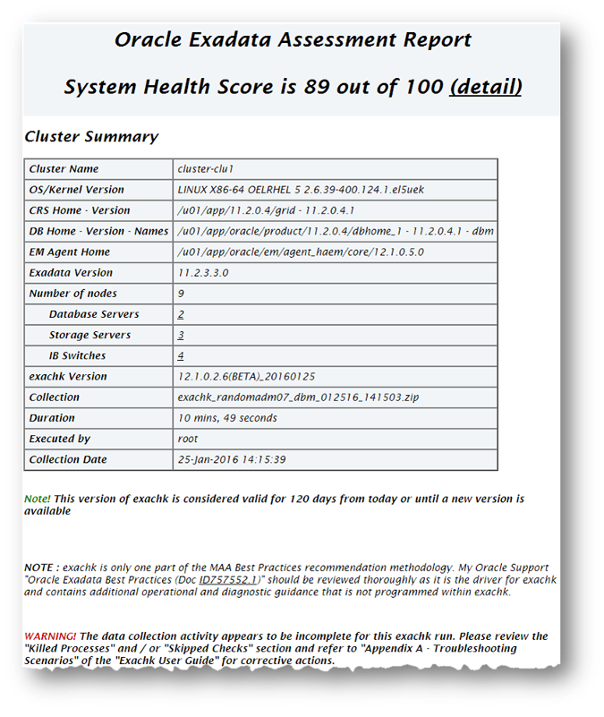
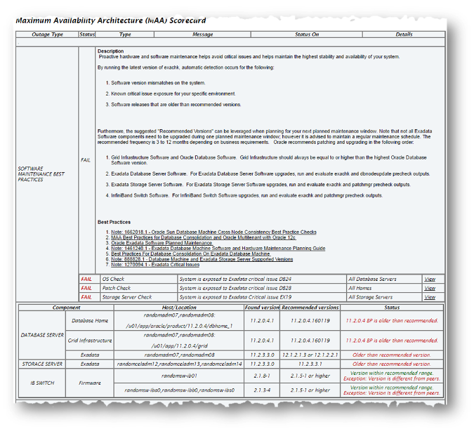
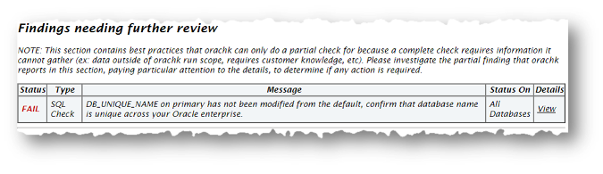
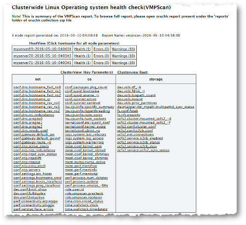
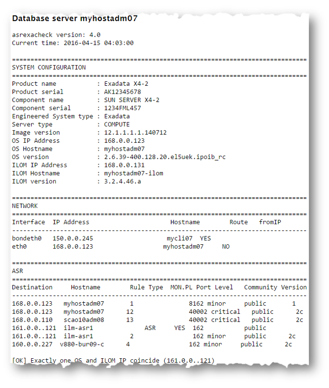
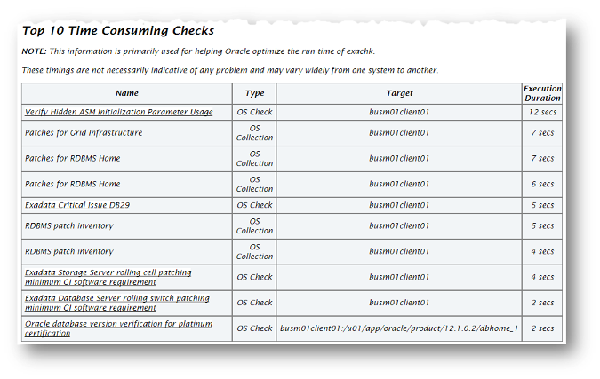
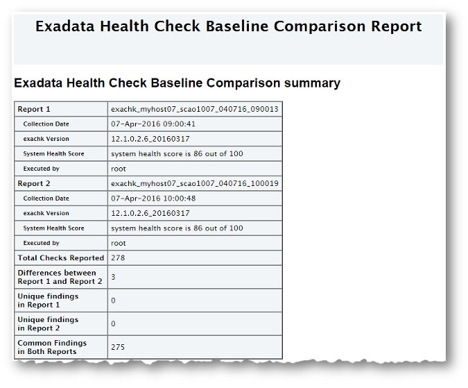
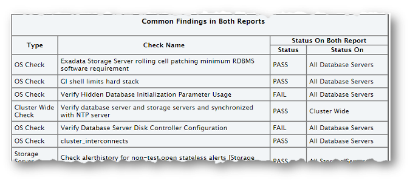

1.5 Understanding and Managing Reports and Output
Oracle ORAchk and Oracle EXAchk generate a detailed HTML report with findings and recommendations.
See Oracle Health Check Collections Manager for Oracle Application Express 4.2 and Integrating Health Check Results with Other Tools for more details about other ways to consume those results.
- Temporary Files and Directories
While running health checks, Oracle ORAchk and Oracle EXAchk create temporary directories and files for the purposes of data collection and assessment, and then delete them upon completion of health check runs. - Output Files and Directories
Oracle ORAchk and Oracle EXAchk create an output directory that contains various files for you to examine. - HTML Report Output
- Tagging Reports
The health check HTML report is typically named:orachk_hostname_database_date_timestamp.htmlorexachk_hostname_database_date_timestamp.html. - Tracking File Attribute Changes
Use the ORAchk and EXAchk-fileattroption and command flags to record and track file attribute settings, and compare snapshots. - Comparing Two Reports
Oracle ORAchk and Oracle EXAchk automatically compare the two most recent HTML reports and generate a third diff report, when run in automated daemon mode. - Merging Reports
Merging reports is useful in role-separated environments where different users are run different subsets of checks and then you want to view everything as a whole. - Output File Maintenance
Oracle ORAchk and Oracle EXAchk create a number of temporary files and directories while running health checks. - Consuming Multiple Results in Other Tools
Optionally integrate health check results into various other tools.
Related Topics
1.5.1 Temporary Files and Directories
While running health checks, Oracle ORAchk and Oracle EXAchk create temporary directories and files for the purposes of data collection and assessment, and then delete them upon completion of health check runs.
$HOME directory of the user who runs the tool. Change this temporary working directory by setting the environment variable RAT_TMPDIR=tmp_directory before using the tools:$ export RAT_TMPDIR=/tmp
$ ./orachk$ export RAT_TMPDIR=/tmp
$ ./exachkIf you are using sudo access for root, and change the RAT_TMPDIR=tmp_directory, then you must also reflect this change in the /etc/sudoers file.
/etc/sudoers file on each server must contain the entry for the root script in the new temporary directory location: oracle ALL=(root) NOPASSWD:/tmp/root_orachk.shoracle ALL=(root) NOPASSWD:/tmp/root_exachk.shroot script only by setting the environment variable.export RAT_ROOT_SH_DIR=/mylocation /etc/sudoers file as follows:oracle ALL=(root) NOPASSWD:/mylocation/root_orachk.shNote:
Any directory specified in RAT_TMPDIR must exist on the hosts for all cluster nodes.
Parent topic: Understanding and Managing Reports and Output
1.5.2 Output Files and Directories
Oracle ORAchk and Oracle EXAchk create an output directory that contains various files for you to examine.
utility_name host_name database date time_stamp-
utilityis eitherorachkorexachk -
host_nameis the host name of the node on which Oracle ORAchk or Oracle EXAchk was run -
databaseis the name of the database or one of the databases against which health checks were performed, if applicable -
dateis the date the health check was run -
timestampis the time the health check was run
–output option as follows:$ ./orachk –output output_dir$ ./exachk –output output_dirRAT_OUTPUT environment variable as follows:$ export RAT_OUTPUT=output_dir
$ ./orachk $ export RAT_OUTPUT=output_dir
$ ./exachk The contents of this directory is available in a zip file with the same name.
After completing the health checks, Oracle ORAchk and Oracle EXAchk report the location of this zip file and the HTML report file.
...
Detailed report (html) - /orahome/oradb/orachk/orachk_myhost_rdb11204_041816_055429/orachk_myhost_rdb11204_041816_055429.html
UPLOAD(if required) - /orahome/oradb/orachk/orachk_myhost_rdb11204_041816_055429.zip
$ ls -la
total 61832
drwxr-xr-x 4 oradb oinstall 4096 Apr 18 05:55 .
drwx------ 34 oradb oinstall 4096 Apr 18 05:58 ..
drwxr--r-- 3 oradb oinstall 4096 Mar 28 17:36 .cgrep
-rw-r--r-- 1 oradb oinstall 4692868 Mar 28 17:35 CollectionManager_App.sql
-rw-r--r-- 1 oradb oinstall 41498425 Apr 18 05:54 collections.dat
-rwxr-xr-x 1 oradb oinstall 2730651 Mar 28 17:35 orachk
drwxr-xr-x 7 oradb oinstall 4096 Apr 18 05:55 orachk_myhost_rdb11204_041816_055429
-rw-r--r-- 1 oradb oinstall 36141 Apr 18 05:55 orachk_myhost_rdb11204_041816_055429.zip
-rw-r--r-- 1 oradb oinstall 9380260 Mar 28 19:02 orachk.zip
-rw-r--r-- 1 oradb oinstall 3869 Mar 28 17:36 readme.txt
-rw-r--r-- 1 oradb oinstall 4877997 Apr 18 05:54 rules.dat
-rw-r--r-- 1 oradb oinstall 40052 Mar 28 17:35 sample_user_defined_checks.xml
-rw-r--r-- 1 oradb oinstall 2888 Mar 28 17:35 user_defined_checks.xsd
-rw-r--r-- 1 oradb oinstall 425 Mar 28 17:36 UserGuide.txt
The output directory contains several other directories and the main HTML report file.
$ cd orachk_myhost_rdb11204_041816_055429
$ ls -la
total 60
drwxr-xr-x 7 oradb oinstall 4096 Apr 18 05:55 .
drwxr-xr-x 4 oradb oinstall 4096 Apr 18 05:55 ..
drwxr-xr-x 2 oradb oinstall 4096 Apr 18 05:55 log
-rw-r--r-- 1 oradb oinstall 30815 Apr 18 05:55 orachk_myhost_rdb11204_041816_055429.html
drwxr-xr-x 4 oradb oinstall 4096 Apr 18 05:55 outfiles
drwxr-xr-x 2 oradb oinstall 4096 Apr 18 05:55 reports
drwxr-xr-x 2 oradb oinstall 4096 Apr 18 05:55 scripts
drwxr-xr-x 2 oradb oinstall 4096 Apr 18 05:55 upload
Oracle ORAchk and Oracle EXAchk each creates an output directory containing the following information depending on which tool you use:
Table 1-3 Output Files and Directories
| Output | Description |
|---|---|
|
|
Contains several log files recording details about the health check, including: Oracle ORAchk:
Oracle EXAchk:
|
|
|
Contains several the collection results. |
|
|
Contains subreports used to build the main report. |
|
|
Contains scripts used during collection. |
|
|
Contains files to upload collection results to a database for the Oracle Health Check Collections Manager to consume, integrate the results into your own application, or integrate into other utilities. |
|
|
Oracle ORAchk: Main HTML report output using the same name format as the output directory: |
|
|
Oracle EXAchk: Main HTML report output using the same name format as the output directory: |
1.5.3 HTML Report Output
The Health Check HTML report contains the following:
-
High level health score
-
Summary of the run
-
Table of contents that provides easy access to findings
-
Findings and recommendations to resolve the issues
- System Health Score and Summary
Oracle ORAchk and Oracle EXAchk calculate a high-level System Health Score based on the number of passed or failed health checks. - HTML Report Table of Contents and Features
The Table of Contents provides links to each of the major sections within the HTML report. - HTML Report Findings
Report findings are grouped by Oracle Stack component. - Maximum Availability Architecture (MAA) Scorecard
The Maximum Availability Architecture (MAA) Scorecard is displayed after the Findings group. - Findings Needing Further Review
Issues that health checks have only a partial view and need user reviews to determine if they are relevant are displayed in the Findings needing further review section. - Platinum Certification
The Platinum Certification section shows a list of compliance status items for the Oracle Platinum service. - Viewing Clusterwide Linux Operating System Health Check (VMPScan)
On Linux systems, view a summary of the VMPScan report in the Clusterwide Linux Operating System Health Check (VMPScan) section of the Health Check report. - "Systemwide Automatic Service Request (ASR) healthcheck" Section
asrexacheckis designed to check and test ASR configurations to ensure that communication to the ASR Manager is possible. - File Attribute Changes
The File Attribute Changes section is shown in the report only when Oracle ORAchk and Oracle EXAchk are run with the–fileattroption. - Skipped Checks
Any checks that were not able to be run and skipped for some reason are shown in the Skipped Checks section. - Component Elapsed Times
The Component Elapsed Times gives a breakdown of time required to check various components. - Top 10 Time Consuming Checks
The Top 10 Time Consuming Checks section shows the slowest 10 checks that were run. - How to Find a Check ID
Each health check has a unique 32 character ID. - How to Remove Checks from an Existing HTML Report
Hide individual findings from the report using Remove findings .
Parent topic: Understanding and Managing Reports and Output
1.5.3.1 System Health Score and Summary
Oracle ORAchk and Oracle EXAchk calculate a high-level System Health Score based on the number of passed or failed health checks.
A summary of the run shows, where and when it was run, which version was used, how long it took, which user it was run as, and so on.
Figure 1-1 System Health Score and Summary
Description of "Figure 1-1 System Health Score and Summary"
Click the detail link to expand the System Health Score section to view details of how this is calculated.
–noscore option:$ ./orachk –noscore$ ./exachk –noscoreRelated Topics
Parent topic: HTML Report Output
1.5.3.2 HTML Report Table of Contents and Features
The Table of Contents provides links to each of the major sections within the HTML report.
The next section in the HTML report after the summary is the Table of Contents and Report Features:
-
The Table of Contents provides links to each of the major sections within the HTML report
-
What is shown in the Table of Contents will depend on the Oracle Stack components found during the health check run.
-
-
The Report Features allow you to:
-
Filter checks based on their statuses.
-
Select the regions.
-
Expand or collapse all checks.
-
View check IDs.
-
Remove findings from the report.
-
Get a printable view.
-
By default, passed checks are hidden. To view, select the Pass check box under Show Checks with the following status. To exclude passed checks from the HTML report, use the –nopass option:
$ ./orachk –nopass$ ./exachk –nopassFigure 1-3 Report Table of Contents and Features

Description of "Figure 1-3 Report Table of Contents and Features"
Related Topics
Parent topic: HTML Report Output
1.5.3.3 HTML Report Findings
Report findings are grouped by Oracle Stack component.
Findings include:
-
Status of check (
FAIL,WARNING,INFO, orPASS) -
Type of check
-
Check message
-
Location where the check was run
-
Link to expand details for further findings and recommendations
Click view details to view the findings and the recommendations.
-
Solution to solve the problem
-
Applicable recommendations
-
Where the problem does not apply
-
Links to relevant documentation or My Oracle Support Notes
-
Example of data the recommendation is based on
Parent topic: HTML Report Output
1.5.3.4 Maximum Availability Architecture (MAA) Scorecard
The Maximum Availability Architecture (MAA) Scorecard is displayed after the Findings group.
The MAA Scorecard provides a set of best practices for maximum availability architecture. It also shows results related to maximum availability, such as the installed software versions checked for noncurrent software, and use of incompatible features.
Figure 1-6 Maximum Availability Architecture (MAA) Scorecard
Description of "Figure 1-6 Maximum Availability Architecture (MAA) Scorecard"
-m option:$ ./orachk –m$ ./exachk –mRelated Topics
Parent topic: HTML Report Output
1.5.3.5 Findings Needing Further Review
Issues that health checks have only a partial view and need user reviews to determine if they are relevant are displayed in the Findings needing further review section.
Figure 1-7 Findings needing further review
Description of "Figure 1-7 Findings needing further review"
Parent topic: HTML Report Output
1.5.3.6 Platinum Certification
The Platinum Certification section shows a list of compliance status items for the Oracle Platinum service.
For the existing Platinum customers it is a review. For customers not yet participating in Oracle Platinum, it is an indication of readiness to participate in Oracle Platinum.
Note:
This section is seen when health checks are run on Oracle Engineered Systems.
Parent topic: HTML Report Output
1.5.3.7 Viewing Clusterwide Linux Operating System Health Check (VMPScan)
On Linux systems, view a summary of the VMPScan report in the Clusterwide Linux Operating System Health Check (VMPScan) section of the Health Check report.
The full VMPScan report is also available within the collection/reports and collection/outfiles/vmpscan directory.
Figure 1-9 Clusterwide Linux Operating System Health Check (VMPScan)
Description of "Figure 1-9 Clusterwide Linux Operating System Health Check (VMPScan)"
Note:
The VMPScan report is included only when Oracle ORAchk is run on Linux systems.
Parent topic: HTML Report Output
1.5.3.8 "Systemwide Automatic Service Request (ASR) healthcheck" Section
asrexacheck is designed to check and test ASR configurations to ensure that communication to the ASR Manager is possible.
This is a non-invasive script that checks configurations only and does not write to any system or configuration files. The script checks for known configuration issues and any previous hardware faults that may not have been reported by ASR due to a misconfiguration on the BDA.
This section is included in the report only when health checks are run on Oracle Engineered Systems.
The following is a sample of the Systemwide Automatic Service Request (ASR) healthcheck section truncated for brevity:
Figure 1-10 Systemwide Automatic Service Request (ASR) healthcheck
Description of "Figure 1-10 Systemwide Automatic Service Request (ASR) healthcheck"
Related Topics
Parent topic: HTML Report Output
1.5.3.9 File Attribute Changes
The File Attribute Changes section is shown in the report only when Oracle ORAchk and Oracle EXAchk are run with the –fileattr option.
Parent topic: HTML Report Output
1.5.3.10 Skipped Checks
Any checks that were not able to be run and skipped for some reason are shown in the Skipped Checks section.
Related Topics
Parent topic: HTML Report Output
1.5.3.11 Component Elapsed Times
The Component Elapsed Times gives a breakdown of time required to check various components.
This can be useful when diagnosing performance problems.
Related Topics
Parent topic: HTML Report Output
1.5.3.12 Top 10 Time Consuming Checks
The Top 10 Time Consuming Checks section shows the slowest 10 checks that were run.
This can be useful when diagnosing performance problems.
Figure 1-14 Top 10 Time Consuming Checks
Description of "Figure 1-14 Top 10 Time Consuming Checks"
Related Topics
Parent topic: HTML Report Output
1.5.3.13 How to Find a Check ID
Each health check has a unique 32 character ID.
You may want to find a check id while:
-
Communicating to Oracle or your own internal teams about a specific check
-
Excluding or only running one or more checks
To find a particular check id using a generated report, click the Show Check Ids link.
The findings will then display an extra column to the left with the Check Id.
Related Topics
Parent topic: HTML Report Output
1.5.3.14 How to Remove Checks from an Existing HTML Report
Hide individual findings from the report using Remove findings .
Click Remove finding from report.
A button with an X appears next to each finding.
Click X to hide the finding. This does not remove the finding from the source of the HTML report it simply hides it. If the HTML report is reloaded the finding will appear again.
To permanently hide the finding use your browser’s Save Page option to save the report once the finding is hidden.
If there are findings that you never want to see in the report, then they can be excluded altogether so the checks are never run in the first place.
Related Topics
Parent topic: HTML Report Output
1.5.4 Tagging Reports
The health check HTML report is typically named: orachk_hostname_database_date_timestamp.html or exachk_hostname_database_date_timestamp.html.
You can include other tags in the HTML report name to facilitate differentiation and identification.
Include a custom tag in the HTML report name as follows:
$ ./orachk –tag tag_name$ ./exachk –tag tag_nameorachk_host_name_database_date_timestamp_tag_name.htmlexachk_host_name_database_date_timestamp_tag_name.htmlParent topic: Understanding and Managing Reports and Output
1.5.5 Tracking File Attribute Changes
Use the ORAchk and EXAchk -fileattr option and command flags to record and track file attribute settings, and compare snapshots.
By default, running Oracle ORAchk or Oracle EXAchk with the -fileattr option checks all files within Oracle Grid Infrastructure and Oracle Database homes. You can use the file attribute tracking options to manage the list of directories and contents that you want to monitor.
Table 1-4 List of ORAchk and EXAchk File Attribute Tracking Options
| Option | Description |
|---|---|
|
|
Takes file attribute snapshots of discovered directories, and stores the snapshots in the output directory. By default, this option takes snapshots of Oracle Grid Infrastructure homes, and all of the installed database homes. If a user does not own a particular directory, then it does not take snapshots of the directory. |
|
|
Takes a new snapshot of discovered directories, and compares it with the previous snapshot. |
|
|
Removes file attribute snapshots and related files. |
|
|
You can specify a comma-delimited list of directories to check file attributes. For example:
|
|
|
Excludes the discovered directories. For example:
|
|
|
Uses a snapshot that you designate as the baseline for a snapshot comparison. You must provide the path to the snapshot that you want to use as the baseline. For example:
|
|
|
Performs only file attributes check, and then exits ORAchk. For example:
|
Note:
You must have Oracle Grid Infrastructure installed and running before you use -fileattr .
Using the File Attribute Check With the Daemon:
-
Start the daemon:
./orachk -d start -
Start the client run with the
-fileattroptions:./orachk -fileattr start -includedir "/root/myapp,/etc/oratab" -excludediscovery ./orachk -fileattr check -includedir "/root/myapp,/etc/oratab" -excludediscovery -
Specify the output directory to store snapshots with the
–outputoption as follows:./orachk -fileattr start -output "/tmp/mysnapshots"
–tag to help identify your snapshots:./orachk -fileattr start -tag "BeforeXYZChange"
Generated snapshot directory-
orachk_myserver65_20160329_052056_ BeforeXYZChange
Taking File Attribute Snapshots with ORAchk and EXAchk –fileattr start
–fileattr start to start the first snapshot. By default, the directories included in the snapshots are Oracle Grid Infrastructure homes, and all installed Oracle Database homes../orachk –fileattr start./exachk –fileattr start$ ./orachk -fileattr start
CRS stack is running and CRS_HOME is not set. Do you want to set CRS_HOME to /u01/app/11.2.0.4/grid?[y/n][y]
Checking ssh user equivalency settings on all nodes in cluster
Node mysrv22 is configured for ssh user equivalency for oradb user
Node mysrv23 is configured for ssh user equivalency for oradb user
List of directories(recursive) for checking file attributes:
/u01/app/oradb/product/11.2.0/dbhome_11202
/u01/app/oradb/product/11.2.0/dbhome_11203
/u01/app/oradb/product/11.2.0/dbhome_11204
orachk has taken snapshot of file attributes for above directories at: /orahome/oradb/orachk/orachk_mysrv21_20160504_041214
Selecting Directories to Check with ORAchk and EXAchk –includedir
–includedir directories option, where directories is a comma-delimited list of directories to include. For example:./orachk -fileattr start -includedir "/home/oradb,/etc/oratab"./exachk -fileattr start -includedir "/home/oradb,/etc/oratab"$ ./orachk -fileattr start -includedir "/root/myapp/config/"
CRS stack is running and CRS_HOME is not set. Do you want to set CRS_HOME to /u01/app/12.2.0/grid?[y/n][y]
Checking for prompts on myserver18 for oragrid user...
Checking ssh user equivalency settings on all nodes in cluster
Node myserver17 is configured for ssh user equivalency for root user
List of directories(recursive) for checking file attributes:
/u01/app/12.2.0/grid
/u01/app/oradb/product/12.2.0/dbhome_1
/u01/app/oradb2/product/12.2.0/dbhome_1
/root/myapp/config/
orachk has taken snapshot of file attributes for above directories at: /root/orachk/orachk_ myserver18_20160511_032034
Excluding Directories from Checks Using ORAchk and EXAchk -excludediscovery
You can run ORAchk or EXAchk to exclude directories that you do not list in the -includedir discover list by using the -excludediscovery option.
For example:
$ ./orachk -fileattr start -includedir "/root/myapp/config/" -excludediscovery
CRS stack is running and CRS_HOME is not set. Do you want to set CRS_HOME to /u01/app/12.2.0/grid?[y/n][y]
Checking for prompts on myserver18 for oragrid user...
Checking ssh user equivalency settings on all nodes in cluster
Node myserver17 is configured for ssh user equivalency for root user
List of directories(recursive) for checking file attributes:
/root/myapp/config/
orachk has taken snapshot of file attributes for above directories at: /root/orachk/orachk_myserver18_20160511_032209
Rechecking Changes by Using ORAchk and EXAchk –fileattr check
Use –fileattr check to take a new snapshot, and run a normal health check collection. The command compares the new snapshot to the previous snapshot.
./orachk –fileattr check./exachk –fileattr checkNote:
To obtain an accurate comparison between snapshots, you must se –fileattr check with the same options that you used with the previous snapshot collection that you obtained with –fileattr start.
For example, if you obtained your first snapshot by using the options -includedir "/somedir" –excludediscovery when you ran –fileattr start, then you must include the same options with –fileattr check to obtain an accurate comparison.
$ ./orachk -fileattr check -includedir "/root/myapp/config" -excludediscovery
CRS stack is running and CRS_HOME is not set. Do you want to set CRS_HOME to /u01/app/12.2.0/grid?[y/n][y]
Checking for prompts on myserver18 for oragrid user...
Checking ssh user equivalency settings on all nodes in cluster
Node myserver17 is configured for ssh user equivalency for root user
List of directories(recursive) for checking file attributes:
/root/myapp/config
Checking file attribute changes...
.
"/root/myapp/config/myappconfig.xml" is different:
Baseline : 0644 oracle root /root/myapp/config/myappconfig.xml
Current : 0644 root root /root/myapp/config/myappconfig.xml
...Results of the file attribute changes are reflected in the File Attribute Changes section of the HTML output report.
Designating a Snapshot As a Baseline for Comparisons with Oracle ORAchk and Oracle EXAchk –baseline
–baseline path_to_snapshot option../orachk -fileattr check -baseline path_to_snapshot./exachk –fileattr check –baseline path_to_snapshot./orachk -fileattr check -baseline "/tmp/Snapshot"Restrict System Checks to Attributes Only Using Oracle ORAchk and Oracle EXAchk –fileattronly
–fileattr check also performs a full health check run. To perform only file attribute checking, and not proceed with other health checks, use the –fileattronly option:./orachk -fileattr check –fileattronly./exachk -fileattr check –fileattronlyOracle ORAchk and Oracle EXAchk –fileattr remove
–fileattr remove option:./orachk –fileattr remove./exachk –fileattr remove$ ./orachk -fileattr remove
CRS stack is running and CRS_HOME is not set. Do you want to set CRS_HOME to /u01/app/12.2.0/grid?[y/n][y]y
Checking for prompts on myserver18 for oragrid user...
Checking ssh user equivalency settings on all nodes in cluster
Node myserver17 is configured for ssh user equivalency for root user
List of directories(recursive) for checking file attributes:
/u01/app/12.2.0/grid
/u01/app/oradb/product/12.2.0/dbhome_1
/u01/app/oradb2/product/12.2.0/dbhome_1
Removing file attribute related files...
...Parent topic: Understanding and Managing Reports and Output
1.5.6 Comparing Two Reports
Oracle ORAchk and Oracle EXAchk automatically compare the two most recent HTML reports and generate a third diff report, when run in automated daemon mode.
–diff option:$ ./orachk –diff report_1 report_2$ ./exachk –diff report_1 report_2where, report_1 and report_2 are the path and name of any of the following:
-
HTML reports
-
Output directories
-
Output zip files
The diff output lists a summary of changes found and the location of the new diff HTML report.
$./exachk -diff exachk_myhost07_scao1007_040716_090013.zip exachk_myhost07_scao1007_040716_100019.zip
Summary
Total : 278
Missing : 0
New : 0
Changed : 3
Same : 275
Check comparison is complete. The comparison report can be viewed in: /opt/oracle.SupportTools/exachk/exachk_040716090013_040716100019_diff.html
The diff HTML report shows a summary of both compared reports.
Figure 1-19 Health Check Baseline Comparison Report
Description of "Figure 1-19 Health Check Baseline Comparison Report"
The Table of Contents provides quick access to the major sections in the report. You can also access various check Ids listed in the Show Check Ids section.
The Differences between Report 1 and Report 2 section shows what checks have different results.
The Unique findings section shows any check findings that were unique to either of the reports
The Common Findings in Both Reports section shows all the check results that had the same results in both the reports.
Figure 1-23 Common Findings in Both Reports
Description of "Figure 1-23 Common Findings in Both Reports"
Parent topic: Understanding and Managing Reports and Output
1.5.7 Merging Reports
Merging reports is useful in role-separated environments where different users are run different subsets of checks and then you want to view everything as a whole.
–merge option, followed by a comma--delimited list of directories or zip files:./orachk -merge orachk_myhost_mydb_041916_033322_dba,orachk_myhost_mydb_041916_035448_sysadmin
./exachk -merge exachk_myhost_mydb_041916_033322_dba,exachk_myhost_mydb_041916_035448_sysadmin$./orachk -merge orachk_myhost_mydb_041916_033322_dba, orachk_myhost_mydb_041916_035448_sysadmin
Merging following collections:
orachk_myhost_mydb_041916_033322_dba
orachk_myhost_mydb_041916_035448_sysadmin
. . . . .
Started merging orachk_myhost_mydb_041916_033322_dba
...............................................................................
Started merging orachk_myhost_mydb_041916_035448_sysadmin
...............................................................................
---------------------------------------------------------------------------------
Detailed report (html) - /oracle/orachk/orachk_myhost_mydb_041916_033322_dba_merge/orachk_myhost_mydb_041916_033322_dba_merge.html
UPLOAD(if required) - /orahome/oradb/orachk/orachk_myhost_mydb_041916_033322_dba_merge.zipThe resulting merged HTML report summary will show the collections it was merged from.
The merged findings appear together.
Note:
For Oracle EXAchk, use the –force option to force merge collections from dom0 and domu, or global and local zones.
Parent topic: Understanding and Managing Reports and Output
1.5.8 Output File Maintenance
Oracle ORAchk and Oracle EXAchk create a number of temporary files and directories while running health checks.
Oracle ORAchk and Oracle EXAchk create an output directory that contains various files for you to examine. The total size of the output directory and .zip file is under 5 MB. However, the size depends on the number of Oracle Stack Components evaluated.
If you are running health checks in automated daemon Mode, then set the collection_retention duration to purge old collections.
If you are running health checks on-demand or in silent mode, then it is your responsibility to implement processes and procedures to purge result output.
1.5.9 Consuming Multiple Results in Other Tools
Optionally integrate health check results into various other tools.
For more information, see:
Parent topic: Understanding and Managing Reports and Output